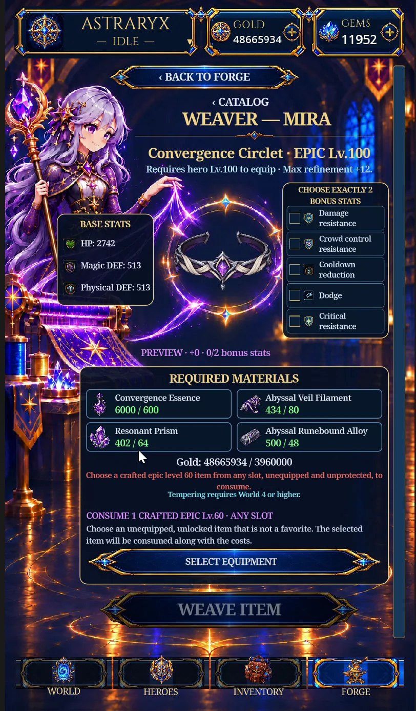
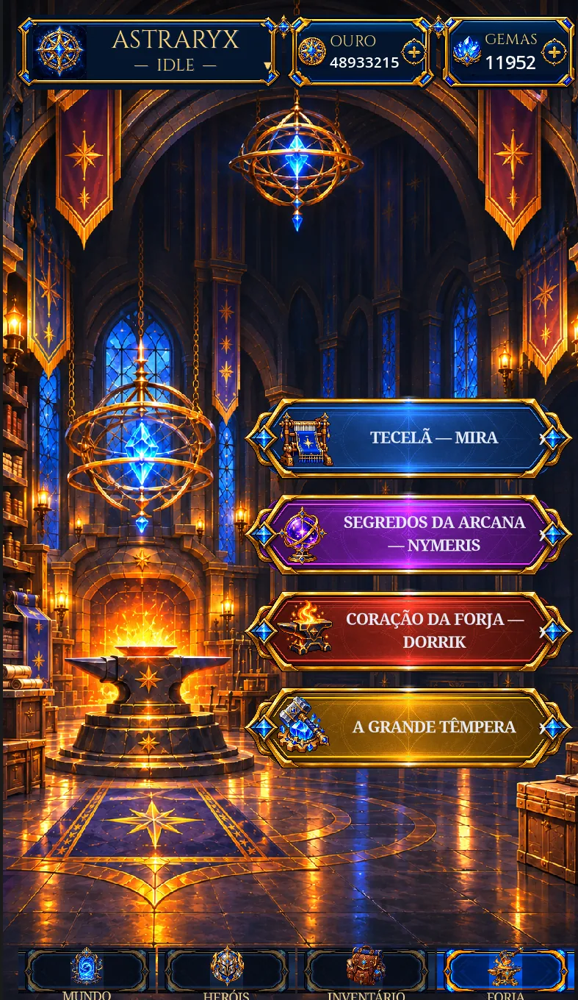
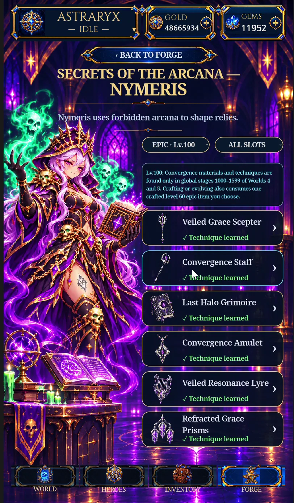
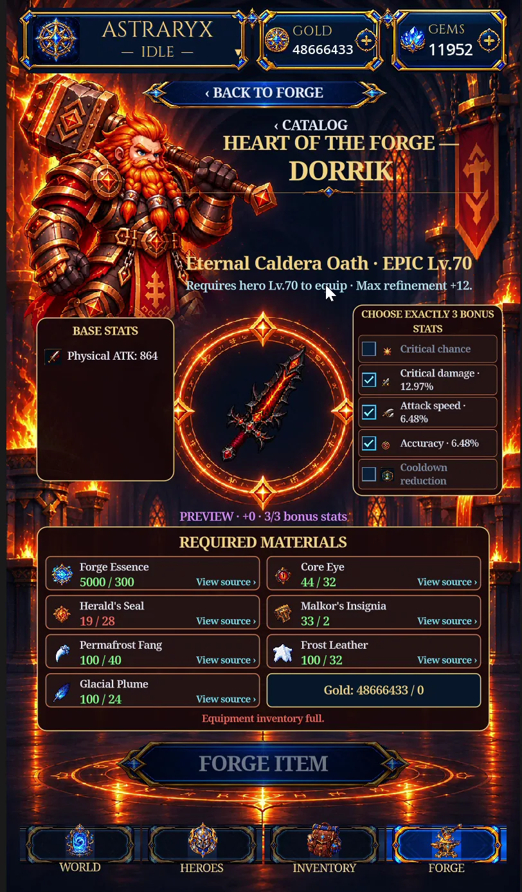

01 / WEAVERMira · A Tecelã
Tecelagem com catálogo por níveis, escolha de atributos adicionais, prévia do equipamento e materiais necessários à criação.
Uma nova experiência para criar seus equipamentos. Três mestres, ambientes próprios e interfaces reformuladas para deixar cada escolha mais clara — e cada criação mais épica.

Explore equipamentos e receitas por nível, com listas mais claras.
Consulte atributos básicos, bônus e requisitos antes de forjar.
Mira, Nymeris e Dorrik agora protagonizam suas próprias interfaces.
Cada caminho de criação ganha uma apresentação própria, mantendo as informações importantes mais próximas da decisão do jogador.

01 / WEAVERTecelagem com catálogo por níveis, escolha de atributos adicionais, prévia do equipamento e materiais necessários à criação.

02 / ARCANAO caminho dos artefatos arcanos recebe um catálogo próprio, com navegação por equipamentos e uma identidade visual mágica.

03 / HEART OF THE FORGEArmas e armaduras em uma bancada renovada: prévia dos atributos, bônus selecionáveis, materiais e estados de fabricação.
Demonstração real gravada no jogo, mostrando a transição entre os catálogos e as telas de criação da nova Forja.
Vídeo de gameplay enviado pelo desenvolvedor · aproximadamente 54 segundos
Capturas extraídas diretamente do vídeo. Clique para ampliar e examinar as interfaces.
Uma atualização centrada na experiência de criação de equipamentos e na apresentação visual da Forja.
Estas notas descrevem as mudanças visíveis na gravação. A Grande Têmpera e possíveis alterações internas de balanceamento ou receitas não foram verificadas no vídeo. Versão Android: 80605.
A próxima evolução do seu equipamento começa na Forja.
VER PÁGINA DE RELEASES